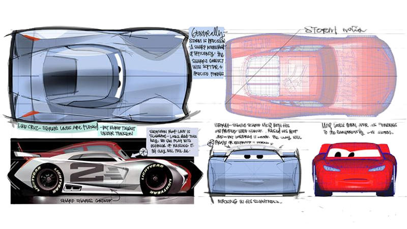

Welcome to the AI Model Match Portfolio
Innovative digital solutions for clients across all Automotive Brands.
View The WorkFeatured Projects

Comparison Pages
Easily compare different models based on performance, accuracy, and features to find the best fit for your needs.
View Details